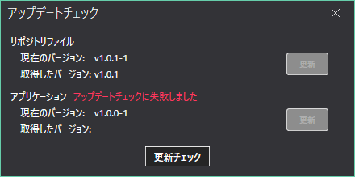

プリインストールリポジトリとAviUtlAutoInstallerの更新を行う方法を説明します。
更新があれば、"アップデートがあります"と表示される
更新チェックに失敗した場合は、"アップデートチェックに失敗しました"と表示される
更新がなければ、以下のように、取得したバージョンのみ表示される
これは、プリインストールリポジトリとアプリとが対応しているバージョンです。
お互いのバージョンが一致していない場合は、使用できないのでバージョンを合わせてください。
例)
プリインストールリポジトリ: v0.3.0-0
アプリ: v0.1.0-0
-> 対応
更新完了後、プリインストールリポジトリを再読み込みするので、そのまま作業を続行することができます。
アップデート完了後、タイミングによってはプリインストールリポジトリが古い場合があるので、更新の確認を行うことをおすすめします。